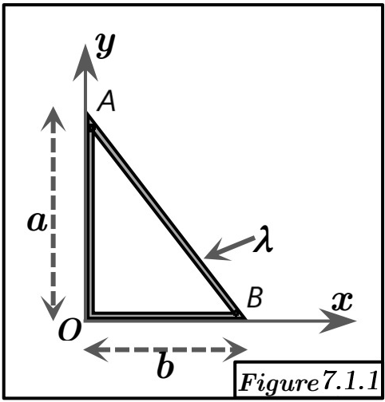

Solution Figure 4.1 : Triangle linéique (angle droit en O)

FIGURE 4.1 - Triangle linéique de côtés a et b
Méthode requise : Théorème de Guldin.
Concepts Clés :
- Premier Théorème de Guldin : L'aire $S_A$ de la surface engendrée par la rotation d'un arc de courbe plane $(L)$ de longueur $L$ autour d'un axe $(\Delta)$ coplanaire ne le coupant pas est :
$$S_A = L \times (2\pi R_G)$$
où $R_G$ est la distance du centre d'inertie $G$ de l'arc à l'axe $(\Delta)$. On en tire :
$$R_G = \frac{S_A}{2\pi L}$$
- Corps linéique : L'objet est constitué de segments de droite de densité linéique $\lambda$ constante.
- Centre d'inertie G : On cherche les coordonnées $(x_G, y_G, 0)$. La coordonnée $x_G$ est la distance à l'axe Oy ($R_{G, Oy}$) et $y_G$ est la distance à l'axe Ox ($R_{G, Ox}$).
- Superposition : On peut calculer la surface générée par chaque segment et les additionner pour obtenir la surface totale générée par l'ensemble.
Géométrie et Décomposition :
- Segment OA sur l'axe Oy : de (0,0) à (0,a). Longueur $L_{OA} = a$.
- Segment OB sur l'axe Ox : de (0,0) à (b,0). Longueur $L_{OB} = b$.
- Segment AB (hypoténuse) : de (0,a) à (b,0). Longueur $L_{AB} = \sqrt{a^2 + b^2}$.
- Longueur totale : $$L = L_{OA} + L_{OB} + L_{AB} = a + b + \sqrt{a^2 + b^2}$$
Calcul du Centre d'Inertie $G = (x_G, y_G)$
Calcul de $x_G$ (rotation autour de l'axe Oy) :
- Segment OA (sur l'axe Oy) : Génère une surface d'aire $S_{A,OA} = 0$.
- Segment OB (sur l'axe Ox) : Génère un disque de rayon b. Aire $S_{A,OB} = \pi b^2$.
- Segment AB (hypoténuse) : Génère la surface latérale d'un cône de rayon de base $r=b$, hauteur $h=a$, et génératrice $l=L_{AB}=\sqrt{a^2+b^2}$. Aire $S_{A,AB} = \pi r l = \pi b \sqrt{a^2+b^2}$.
- Aire totale générée : $$S_{A,Oy} = S_{A,OA} + S_{A,OB} + S_{A,AB} = 0 + \pi b^2 + \pi b \sqrt{a^2+b^2} = \pi b (b + \sqrt{a^2+b^2})$$
- Application de Guldin ($R_{G,Oy} = x_G$) :
$$ x_G = \frac{S_{A,Oy}}{2\pi L} = \frac{\pi b (b + \sqrt{a^2+b^2})}{2\pi (a + b + \sqrt{a^2+b^2})} = \frac{b (b + \sqrt{a^2+b^2})}{2 (a + b + \sqrt{a^2+b^2})} $$
Calcul de $y_G$ (rotation autour de l'axe Ox) :
- Segment OA (sur l'axe Oy) : Génère un disque de rayon a. Aire $S_{A,OA} = \pi a^2$.
- Segment OB (sur l'axe Ox) : Génère une surface d'aire $S_{A,OB} = 0$.
- Segment AB (hypoténuse) : Génère la surface latérale d'un cône de rayon de base $r=a$, hauteur $h=b$, et génératrice $l=L_{AB}=\sqrt{a^2+b^2}$. Aire $S_{A,AB} = \pi r l = \pi a \sqrt{a^2+b^2}$.
- Aire totale générée : $$S_{A,Ox} = S_{A,OA} + S_{A,OB} + S_{A,AB} = \pi a^2 + 0 + \pi a \sqrt{a^2+b^2} = \pi a (a + \sqrt{a^2+b^2})$$
- Application de Guldin ($R_{G,Ox} = y_G$):
$$ y_G = \frac{S_{A,Ox}}{2\pi L} = \frac{\pi a (a + \sqrt{a^2+b^2})}{2\pi (a + b + \sqrt{a^2+b^2})} = \frac{a (a + \sqrt{a^2+b^2})}{2 (a + b + \sqrt{a^2+b^2})} $$
Résultat :
Le centre d'inertie G du triangle linéique a pour coordonnées :
$$ x_G = \frac{b (b + \sqrt{a^2+b^2})}{2 (a + b + \sqrt{a^2+b^2})} $$
$$ y_G = \frac{a (a + \sqrt{a^2+b^2})}{2 (a + b + \sqrt{a^2+b^2})} $$
$$ z_G = 0 $$
Vérification :
Le résultat est symétrique en $(a,b)$ si on échange $(x,y)$. Si $a=b$, on a :
$$ x_G = y_G = \frac{a(a+\sqrt{2a^2})}{2(2a+\sqrt{2a^2})} = \frac{a^2(1+\sqrt{2})}{2a(2+\sqrt{2})} = \frac{a(1+\sqrt{2})}{2\sqrt{2}(\sqrt{2}+1)} = \frac{a}{2\sqrt{2}} $$
ce qui semble plausible (G est sur la bissectrice). Les coordonnées sont positives et inférieures à $b/2$ et $a/2$ respectivement (pour $a,b>0$).
Le calcul direct du centre d'inertie par intégration ($\vec{OG} = \frac{1}{L} \int_{(L)} \vec{OP} dl$) serait plus complexe :
$$ x_G = \frac{1}{L} \left( \int_{OA} x dl + \int_{OB} x dl + \int_{AB} x dl \right) $$
$$ y_G = \frac{1}{L} \left( \int_{OA} y dl + \int_{OB} y dl + \int_{AB} y dl \right) $$
Le théorème de Guldin est nettement plus simple ici car les surfaces générées (disques, cônes) sont standards.